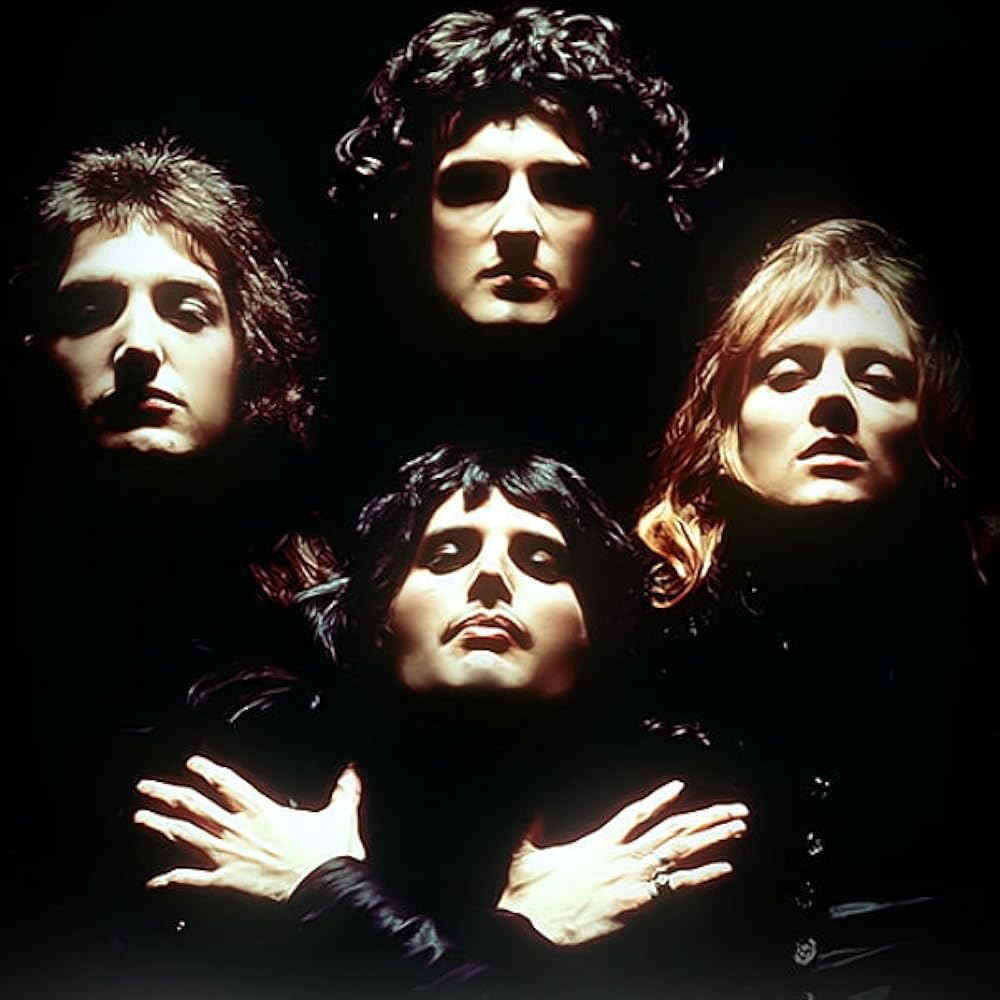

A few iconic people in the music industry
musicans through various generations
throughout history there has been notiable people who had made a difference in the msuice industry, this icludeds bands as well as solo artist. becasue of these people, many times music has been able to evolve and change. for example queen changed and made so many break through, in on enotable event is how when they created Bohemian Rhapsody, it was the first time that a song was over 6 minutes long and it was a hit. Also Michael jackson is a person that have broken through many barriers and has been able to change not only the music world but the lives of many people. what proves this that even todays generation still listens and loves his music. it transcends time and ages.
these people werent the only people who changed the music industry, there is so many iconic people of color gender, backgrounds that brought people together.People like emimen, nf, shakira, selena selena quintanilla, selena gomez,The beatles etc. In many ways people say that if you are good you will be remebered trhough the ages long after your gone.
